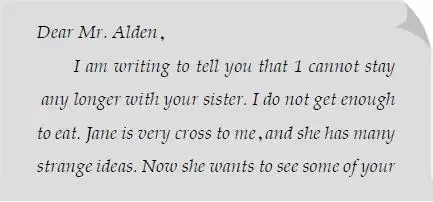
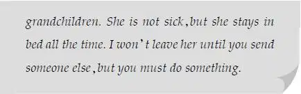

Nobody moved for a minute. At last Henry said，“Listen，Grandfather. We can’t eat a thing if you stay here all alone. Do let us help you. At least tell us who wrote the letter.”
Mr. Alden looked at each of his grandchildren. They were all watching him with loving eyes.
“Well，”he said slowly，“have it your way. Maggie wrote the letter. She is the neighbor who stays with Jane. I have sent a nurse three times，but Jane always sends her back. She doesn’t want anyone there，even to help her.”
“Isn’t it terrible to be like that？” asked Benny.
“Yes，Benny. It’s a very sad thing，” said Mr. Alden.
“Jane was always hard to get along with.”
“But what does Maggie say？” asked Henry.
Mr. Alden looked at his oldest grandson and pulled a letter out of his pocket. “Well，you may as well know the whole story，” he said. “Here is her letter.” He handed it to Henry.
Benny cried，“Read it out loud！ Then we’ll all know what it says！”
Henry looked at his grandfather. Mr. Alden nodded. Henry began to read.


For a minute nobody said a word. Violet was leaning on the arm of her grandfather’s chair. She looked at him and said，“I think I know a way to help，Grandfather.”
Jessie began to laugh.“Violet！Are you thinking what I’m thinking？”
“I guess so，” said Violet，smiling at her older sister.
“I guess so，too，” cried Jessie. “Grandfather，Violet and I would like to take care of Aunt Jane.”
Mr. Alden was quiet.
“Please let us go，Grandfather，” Violet begged.
“My dear girl，” said Mr. Alden，“it isn’t that I don’t want you to go. I just wonder if Jane will be polite to you.”
Violet said，“We’re not worried about that. Jessie and I would be company for each other. And I like to take care of sick people.”
“I know that well，my dear，” said Mr. Alden.“Many times you have made me feel better when I was sick.”
“Telephone，Grandfather！” shouted Benny. He could neverbear to wait. “Tell Maggie that the girls are coming，and everything will be all right forever and ever.”
“Jane doesn’t have a telephone，” said Mr. Alden. He smiled at Benny’s surprised face. Benny thought that everyone had a telephone.
“However，I could send a telegram，” said Mr.Alden. “They send telegrams from the train station in Centerville.”
“Let me look up trains，” said Henry，getting up from the floor. “I wish I could go，too. I have never seen a ranch.”
“I wish you could，too，Henry，” said Jessie. “But it is better for just girls，isn’t it，Grandfather？ Four strange children would frighten Aunt Jane.”
Henry had found a timetable. “There is a train leaving at six o’clock tomorrow that would take you there. You’d have to sleep on the train.”
“We would love that，” said Jessie.
“Well，” said Grandfather slowly，“if you are really going，I should tell you some more. Maggie’s brother，Sam  Weeks，lives next door with his wife. They are very kind people，and I am sure you can stay with them，if Jane isn’t nice to you.”
Mr. Alden already had another telegram in his mind，which he would send to Sam as soon as the children had gone to bed.
“There is just one thing you girls must promise me，” said Mr. Alden. “Every day you must send me a telegram.”
“Of course we promise，” said Jessie.
“Come on，let’s eat！” said Benny. “Can’t you smell the ham and eggs，Grandfather？ Don’t you feel hungry now？”
“Why，yes，I think I do，” said Mr. Alden，surprised. “I really think you two girls might do Jane more good than anyone else in the world.”
Jessie looked at Violet with a smile，which said，“Won’t we have fun？”
Violet was already thinking of her aunt as her dear Aunt Jane.
But then，Violet had never seen many cross people.